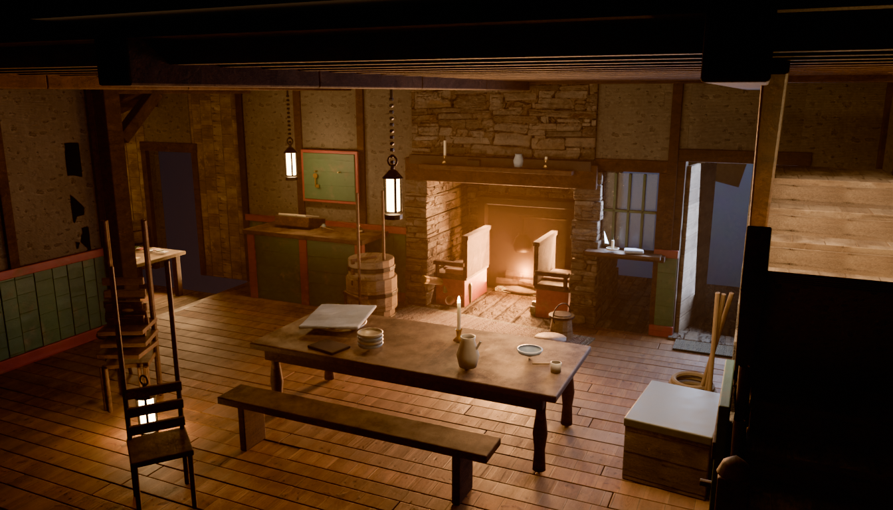
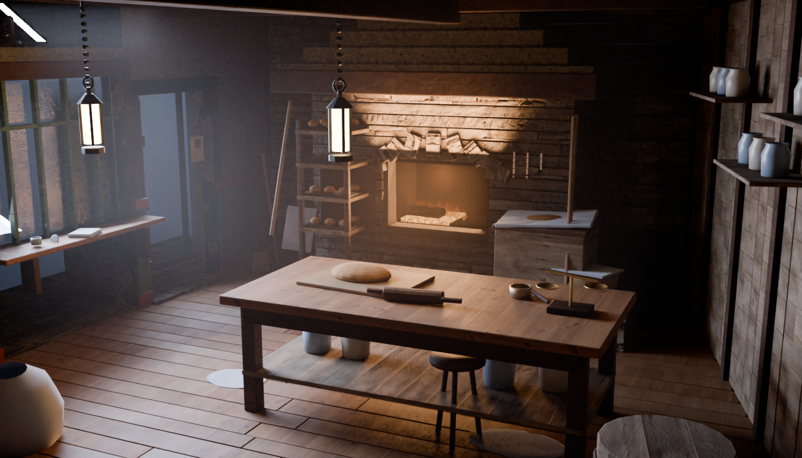
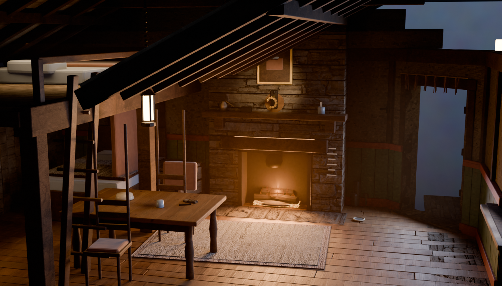
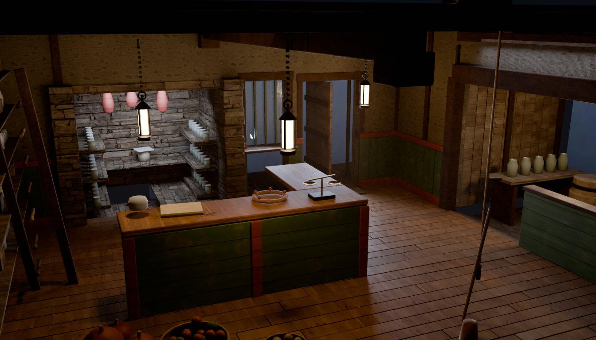

Emberbrook interiors — contact sheet
Emberbrook interiors — four rooms
Built against the anti-box mandate: every room has its own floor
plan, its own set of ceilings, and its own camera personality, and every one of
them stages a specific person's evening on Emberwake. Plates are the shipping
grade (Cycles, AgX Punchy) at the runtime canvas resolution. Every room is
gated by tools/embint_verify.py and baked by
tools/depth_bake.py.
The Ember Hearth — the parlour
emb-inn-int · tools/embint_inn_build.py · camera pitch 13, fov 40

The plan
- STORY.md's "two rooms and a warm parlour", built literally.
- A stone inglenook bay projecting north out of the back wall, with
its own 2.05 soffit and a settle down each cheek. The fire faces the lens
18° off-axis.
- The snug: one step DOWN (−0.31) west through a post-and-beam
opening, no ceiling at all, open to its own mono-pitch rafters.
- A stair climbing the near-right wall and leaving through a real
hole in the parlour ceiling.
- Beams run into the frame and converge, instead of across it.
The evening
- The key board has two hooks and one key — the stranger already
took the other.
- The chairs are stacked by the door: the square's notice board says
"And a chair. We are short of chairs."
- Vesper's satchel and map-tube, dropped on the hearthstone.
- The register open at one new line after a long blank stretch; the
knitting on the settle with the needles still in it.
- Poppy's honeybuns under a cloth. Guests eat first — that is LAW.
Poppy's bakery
emb-bakery-int · tools/embint_bakery_build.py · camera pitch 12, fov 30

The plan
- A wedge: the lane wall cants in 1.70 m over its 6.40 m run, so no
two walls in the room are parallel and the floor is a trapezoid.
- The oven stands on a raised bakehouse platform (+0.34), mouth at
working height, up two worn stone steps.
- Three ceilings: boarded joists at 3.20, the hood dropping to 2.30
over the oven, and a clerestory slot above the bay window.
- The oven is a mass with a real arched mouth and a black vault, not a
feature painted on a wall.
Honeybuns · Poppy · thumb
- The three words she rebuilds herself from after the Hush, all three
built into the room.
- Trays cooling on the rack — and one empty but for crumbs, the
batch already carried up to the square.
- Her apron on its peg with the flour handprints down the front; her stool
with the short leg wedged with a folded paper.
- The burn-salve pot and a wet rag on the sill, exactly where the
first tray comes out every single morning.
- The tally chalked on the oven brick: how many are promised tonight.
The keeper's cottage
emb-lake-int · tools/embint_lake_build.py · camera pitch 10, fov 26

The plan
- Open to the ridge: no ceiling at all over two thirds of it —
rafters, purlins and boarded slates from a 2.30 eave to a 4.20 ridge, with
the hearth's stone breast going up with them.
- A loft under the west slope on a real ladder — Lake's bed, his
blanket, one book — and her bed alcove curtained underneath it.
- A canted entry corner, so the way out faces the lens square-on:
seam canon solved in the plan rather than in the aim.
Both hooks are empty
- "Grandmother's portrait watches from above the mantel… Beneath it,
an empty brass hook, worn bright. The lighter's place, between
rounds." — chapter1.js, verbatim, built.
- And the second one: "Her hand-lamp, off the hook by the door."
He is out on the rounds carrying both. That is the room.
- The hook is over-scaled ≈1.4× with its own small spot — at ten metres a
true-scale hook is four pixels, and an absence has to be legible or it is
only darkness. The plaster round it is polished pale in a ring.
- Kept, not preserved: her chair still at the table with her shawl over
it, her boots still by the door, the rounds chalked on the breast, and
Mochi's saucer with a year of dust in it.
The village store
emb-item-int · tools/embint_item_build.py · camera pitch 15, fov 34

The plan
- Not Dellhollow's chandlery archetype. A farm-village store is a
house: three spaces at three temperatures.
- The larder — a stone alcove projecting north, two steps DOWN into
the old dairy: cold, blue, slate shelves, every preserve in the
village.
- The lean-to — projecting east through a post-and-beam opening,
one step DOWN, under glazing: lamp oil, roots, and the only daylight that
lands on a floor in this room.
- Overhead, the family's floor — with a real trapdoor and rope
hoist, because that is how the sacks get upstairs.
The evening
- A borrow book, not a till: the festival runs on gifts, by LAW
(MECHANICS.md), so the ledger records who owes whom.
- The apples half sorted, and a rejects basket that is winning.
- Twine on its spindle with the cut end tucked under the last turn; a
wreath half made for tonight.
- Children's chalk on the lean-to glazing that nobody has wiped off.